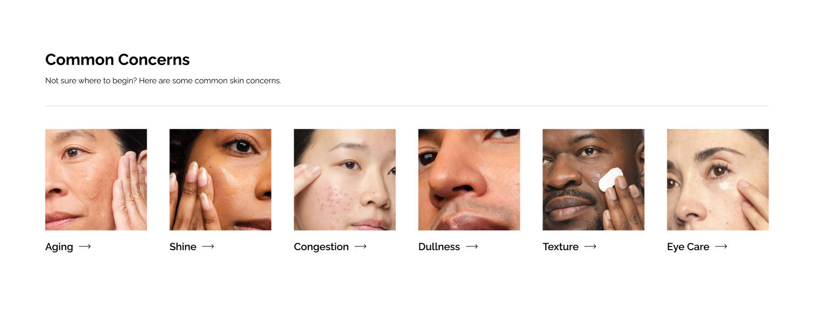

The Ordinary
In early 2024, BASIC® was brought on to reimagine The Ordinary's ecommerce experience. Working within their existing brand, our concepting process surfaced eight distinct directions aimed at making their shopping experience feel more bespoke and interactive. We incorporated those concepts into an overhauled web architecture that prioritized the way their customers actually browse.
